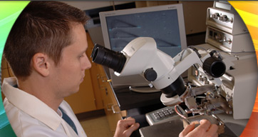
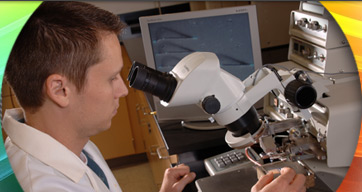

Overarching Strategic Research Thrust: Understanding Florida’s Energy Systems
This thrust provides a platform for each of the other thrusts and allow direct connection to the State’s energy economy. It is planned to unite existing strengths in energy science and engineering with the recognized experts in other areas, including Law, Public Administration and Policy, Economics, Environmental Studies, Geography, Urban and Regional Planning, Information Systems, Social Sciences, and Media Arts.

Enhancing Energy Efficiency and Conservation
Energy efficient technologies have the greatest potential to reduce Florida’s energy consumption. The focus is improving existing and new construction building efficiency and energy system integration for sustainable community developments, industry energy auditing and efficiency, outreach, and education. Buildings use more energy than any other sector of the economy, including transportation and industry, thus making it a major efficiency target. The integration of innovative energy-efficient technologies into our building operations and construction will result in cleaner, healthier, and more sustainable and economically viable communities that are less susceptible to disaster. As part of the Consortium, well-instrumented testing structures will be established to evaluate the effectiveness of integrated emerging technologies as well as hurricane-level wind resilience.

Developing Florida’s Biomass Resources
Biomass offers tremendous opportunity as a major, near-term, carbon-neutral energy resource. Florida has more image0011biomass resources than any other state, 7% of the U.S. total. As such, harnessing these resources should be a key component of Florida’s energy strategy. Efficient biomass conversion depends on locally available resources due to high shipping costs of low energy density biomass. Cellulosic ethanol and gasification processes are just entering the early commercial phase and offer many opportunities for improvement. These improvements are urgently needed to reduce capital cost and facilitate commercial deployment, thus creating new industry and new employment for Florida.

Harnessing Florida’s Solar Resources
The direct conversion of incident solar radiation to electric power is the ultimate sustainable energy source. Not only does it bypass photosynthesis and thus carbon, but it can be implemented also in a distributed mode and fed to an existing distribution system (grid). Florida is one of the richest states in solar radiation, receiving 6 kWhr/m2/day. Therefore, an appropriate strategy for the Sunshine State is to include a significant solar component in its renewables package to offset growth in energy demand.

Ensuring Nuclear Energy and Carbon Constrained Technologies for Electric Power in Florida
Nuclear energy provides large-scale, carbon-free electric power generation today and will remain a major contributor to our power needs. New plant strategy will require an expanded workforce. An existing training reactor would be used to provide training in critical areas such as design, construction, operation, fuel reprocessing, and waste remediation. Development of clean coal and natural gas power generation with carbon sequestration is important for a carbon-constrained world since fossil fuels are the largest contributor to electric power generation.

Exploiting Florida’s Ocean Energy Resources
Covering 70% of the earth’s surface, the oceans are a large solar collector. The resulting energy absorption creates image0033thermal gradients and volatilizes water to produce a large potential renewable energy sources, including ocean current energy, wave energy, tidal energy, ocean thermal gradient energy and salinity gradient energy. Florida Atlantic University’s Center for Ocean Energy Technology provides a focus for development of renewable power sources.

Securing our Energy Storage and Delivery Infrastructure
Increased electricity demand and severe weather adversely impact the reliability and resilience of Florida’s electric power infrastructure. Resulting power interruptions are an economic hardship of several $B/yr and a threat to public safety. This will escalate as Florida’s population increases. Research possibilities include investigation of grid topologies, equipment and systems (e.g., power electronics, transformers, and substations), revenue metering, monitoring and control aimed at improved reliability, power quality, availability and resiliency of the transmission and distribution system.